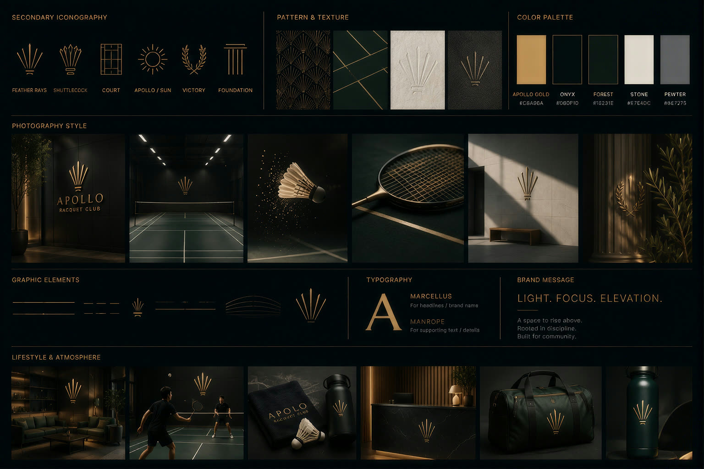
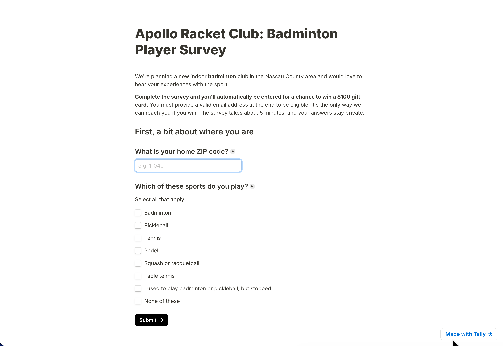
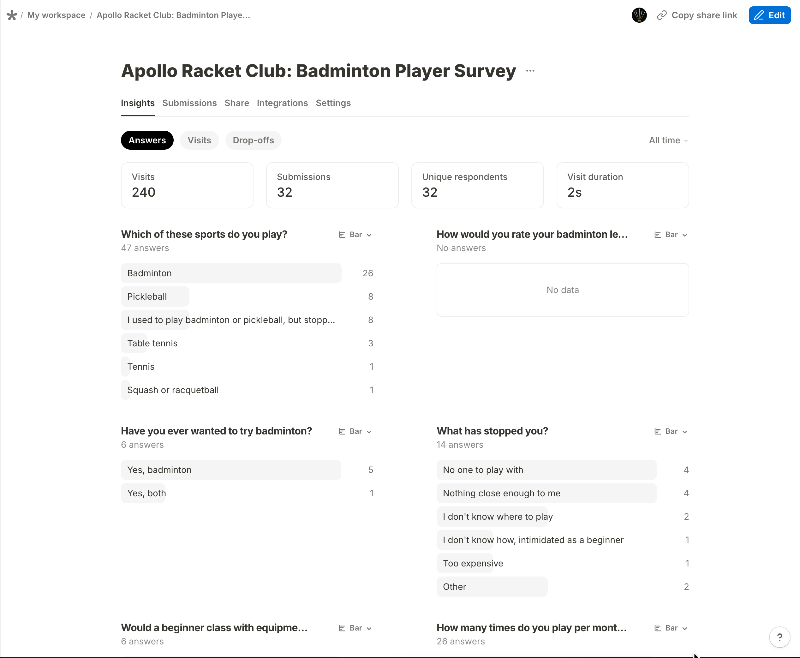
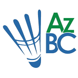

Apollo Racket Club · Founder, designer, builder
Designing and building the digital layer of a business I am launching.
Apollo Racket Club is a dedicated indoor badminton facility I am opening in the Nassau County area of Long Island, NY. I developed the brand, designed and built the site, built an AI-assisted tool to find the right building, and ran the research the financial model rests on.
Apollo
Racket Club
Apollo Racket Club is a planned indoor badminton facility. It operates as Apollo Sports, LLC, a New York LLC, and it is currently pre lease: building a loan file, searching for a building, and running demand validation. The concept is badminton only, not a multi sport venue. The differentiation is specialization, so court spacing, lighting, air handling, flooring, and the entire programming calendar are built around one sport.
The market is the Great Neck and New Hyde Park corridor into central Nassau. The thesis is a supply gap: no dedicated badminton facility in that corridor against a large and underserved player base. I have played badminton since I was 13 and have been part of the New York badminton community for years, so the product decisions come from my own extensive experience with the sport and community.
01 · Brand & identity
The name, the mark, and the repositioning from casual to premium. Brand strategy and identity design.
02 · The marketing site
The identity applied in a live, responsive front end. Product design and front end.
03 · CourtFit
A site analysis tool for commercial listings. Full stack plus applied AI.
04 · The research
Original demand survey and competitive study. Analysis feeding product and pricing.
01 · Brand & identity
The club narrowed to badminton, so the identity had to change.
Apollo launched with a casual, mascot forward identity. Then the business changed underneath it. The club narrowed to badminton only, and the positioning moved to premium and tech forward: smart access, booking, a real technology layer. The casual identity undersold both. I rebranded deliberately instead of tweaking the old one.
Two places at once. My English Cream Golden Retriever is named Apollo, and so is the Greek god. The first identity leaned on the dog. He was the mascot, and the palette was anchored to his cream coat. The second identity keeps the name and moves the reference to the god, which is also where the mark comes from.
The two identities
The mark
A shuttlecock rendered as a sunburst. Art Deco geometry against modern product precision, which is what connects the Greek god to the sport. It holds at favicon size and it does not need the mascot to work.
The brand board

02 · Marketing site
Making a facility that does not exist yet feel real.
Component structure
Next.js and Tailwind, composed from a small set of reusable sections rather than one-off pages.
Responsive layout
Most of the badminton community finds the club on a phone, so mobile is the primary layout.
Motion & performance
Framer Motion for entrance and scroll transitions, kept off the critical render path.
03 · CourtFit
I got tired of underwriting warehouses by hand.
A site analysis tool for evaluating commercial properties as a racquet sports facility.
Evaluating commercial warehouse listings by hand is slow and messy. My workflow was: save LoopNet listings, copy details into Excel, calculate court counts, estimate rent and revenue and profit, map competitors in Google Maps, check demographics, estimate renovation scope from photos, and reason about building code risk. Every promising building meant repeating all of it.
CourtFit collapses that into one input. Paste a commercial property listing (a LoopNet URL, raw listing text, or manual details) and it returns a full site analysis and a decision: extracted property details, a court fit analysis, a pro forma with NOI and payback and a deal rating, a renovation read from the listing photos, code and site risk flags, trade area demographics, nearby competition, and a weighted leaderboard that ranks saved properties against priorities I choose.
CourtFit, end to end
The complete walkthrough: adding a property, reading its verdict, the pipeline map with the Census demand heatmap, and the weighted leaderboard. Four recorded flows and the design reasoning behind each one.
04 · Market & demand research
I needed to know where and how people actually play before I priced anything.

Three things: how people play now (frequency, time of day, group size, where they go today), what they want (coaching, juniors, membership, what would make them switch), and what they will pay. Built in Tally, badminton only, roughly 30 questions after branching, four to five minutes on mobile, targeting about 300 responses.
How it routes
01
Screener
Page one routes everyone. Players and non players never see the same instrument again.
02
Non players
A short latent demand block, then an early exit.
03
Players
Play behavior, current facility, price, booking, coaching, juniors, membership, demographics.
04
Concept test
The concept, then email capture with an organizer flag.
Distribution
Five routes, running from free and manual to paid. I posted in local badminton Facebook groups, then messaged people in those groups individually. I posted to the relevant subreddits. I went to courts in person to talk to players and hand the survey out. Paid advertising ran last, bought through Facebook, which places across Facebook, Instagram, and WhatsApp.
The manual routes cost time instead of money, and they reach the people the trade area map actually cares about: players already driving to courts in this corridor. UTM fields tag every channel, so when fielding closes I can compare response quality by source rather than pooling it into one number.

Fielding in progress
Responses are coming in against a target of about 300. The final count and the headline findings go here once fielding closes. Nothing is reported as a result before there is enough data to support it.
Operator interviews

Real estate is the filter
Clear height of 25 to 27 feet, against local warehouse stock near 16. Columns decide real court counts. I made height and column-free span pass-or-fail, ahead of everything else. That logic became CourtFit.
Permitting is where timelines die
Warehouse to assembly change of occupancy runs 8 to 12 months. Public listings are the ones insiders passed on. I prioritized recreation zoned space and ran permitting, design, and financing in parallel.
The conservative pro forma is the honest one
Courts only needs about 70 percent utilization to break even, which operators called nearly impossible. Several endorsed 50 percent peak and 25 percent off peak. I dropped price escalators and raised the reserve toward six months.
The badminton only thesis held up
No dedicated facility within 7 to 8 miles, nearby clubs booked solid near $120 per court hour, and every local high school adding varsity badminton. I stayed badminton only.
Community is the differentiator
Anyone can put nets in a warehouse. Retention comes from managed skill based open play and community built before opening. I planned community roughly 12 months ahead, segmented by level.
People and construction carry the hidden risk
One club lost two coaches to competing clubs and a $180k non-compete suit, so coaches rent court time on revenue share. Flooring is concrete, rubber underlay, then a certified mat, never a mat on bare concrete.
The interviews set the constraints the rest of the project runs on. The real-estate filter became CourtFit. The pricing and utilization posture became the financial model. The programming and community lessons became the operating plan.
Skills: expert interview design, cross-market synthesis, and turning qualitative findings into site, pricing, and operations decisions.
Secondary & demographic research
- Esri drive time report for the corridor at 10, 20, and 30 minute catchments: population, income, Asian subgroup composition, racquet sport participation, and consumer spending indices.
- SimplyAnalytics village level comparison against Nassau County, New York State, and national baselines.
- US Census 2020 and ACS five year estimates for the local ZIP and adjacent areas.
- Industry benchmarking from IBISWorld gym and fitness, Vertical IQ fitness centers, SFIA State of Pickleball, and USA Pickleball growth data.
Owning the business changed how I designed for it. When the waitlist is my waitlist and the rate card is the one a lender will question, there is no handoff and no one to defer to. Every decision on this page had to survive contact with a real constraint: a lease I have to sign, a loan file that has to close, a community I play in every week and will answer to.
The hardest call was the rebrand. The first identity was not bad work, it was work for a different business, and I had already shipped it. Throwing it out cost more than adjusting it would have, and adjusting it would have left a friendly mascot brand attached to a premium specialist club. Knowing when a design is finished and when it is answering the wrong brief is the judgment I most wanted this project to test.
The most useful thing I learned came from the competitive study. Three conclusions reversed when operator verified data replaced aggregator figures, and each reversal changed a decision. The rate premium I had assumed was not there. Finding that out before the rate card went into the model is worth more than the survey responses, because it is the kind of error that compounds quietly through every downstream number.
The AI work landed in a similar place. CourtFit is useful because the model does the part that is genuinely messy, reading listings and judging photos, while the court math and the pro forma stay as explicit rules I can point at. Deciding where the model gets to be confident and where it has to say verify this is the design problem, and it is the one worth showing.